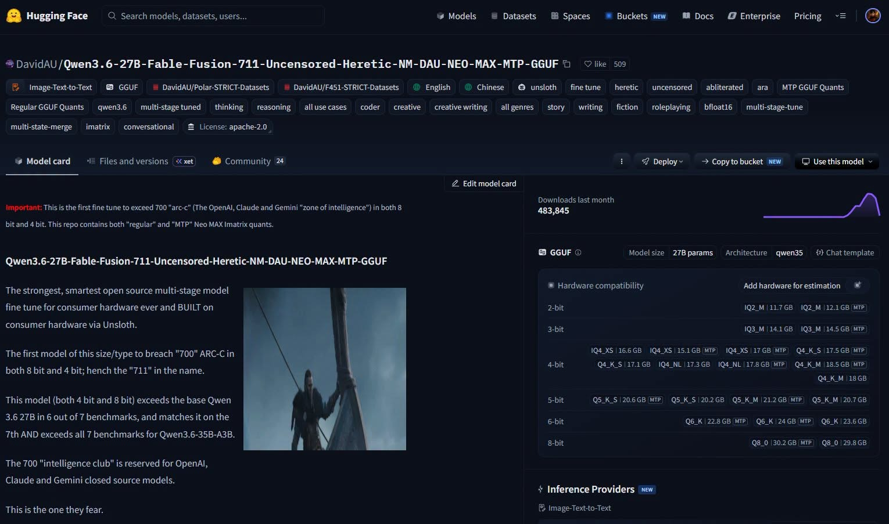

Facebook｜陳盟升：Qwen3.6-27B Fable Fusion 711 uncensored GGUF 熱門下載與 benchmark 宣稱查核
來源是陳盟升（darkschen）在 Facebook 分享的 Hugging Face 模型頁截圖。貼文主題是最新 Qwen3.6-27B「魔改」/ fine-tune / merge GGUF 版本：`DavidAU/Qwen3.6-27B-Fable-Fusion-711-Uncensored-Heretic-NM-DAU-NEO-MAX-MTP-GGUF`。貼文指出該模型推出後短時間有約 48 萬下載、實測分數比原始 27B 更高，且另有 9B 可挑選。

公開 Facebook 內容
Facebook share URL 解析後導向公開相片頁：`https://www.facebook.com/photo.php?fbid=1568489214912575&set=a.118972106530967&type=3`。頁面可見作者為陳盟升，發文時間約 15 小時前。公開文字可讀到：
> 最新 Qwen3.6-27B 魔改版本，推出一週 48 萬下載，實測比原始 27B 分數更高，還有 9B 可以挑選。這兩個都是用 Fable 訓練，並去除審查，在保持智力的同時讓模型更自由，直接去 Hugging Face 搜尋以下模型即可。
主文中完整可辨識的 27B 模型名稱為：
`DavidAU/Qwen3.6-27B-Fable-Fusion-711-Uncensored-Heretic-NM-DAU-NEO-MAX-MTP-GGUF`
留言區可見有人討論 Mac / M4 Max 64GB 記憶體、GB10 跑 27B 速度約 10 多 tok/s、Strix Halo 等硬體經驗。這些留言屬個人環境觀察，不能泛化為固定性能。
圖片 / 封面描述
主圖是 Hugging Face 模型頁截圖。可讀資訊包括：
- 模型：`DavidAU/Qwen3.6-27B-Fable-Fusion-711-Uncensored-Heretic-NM-DAU-NEO-MAX-MTP-GGUF`
- downloads last month：483,845
- 模型尺寸：27B params
- pipeline：Image-Text-to-Text
- tags：GGUF、unsloth、fine tune、heretic、uncensored、abliterated、MTP GGUF Quants、Regular GGUF Quants、qwen3.6、multi-stage tuned、thinking、reasoning、coder、creative writing、roleplaying、bfloat16、imatrix、conversational 等
- license tag：Apache-2.0
- 模型卡強調 8-bit 與 4-bit 版本在 ARC-C 超過 700，並稱「711」來自此 benchmark 表現
Hugging Face 與官方來源查核
Hugging Face API 查核 `DavidAU/Qwen3.6-27B-Fable-Fusion-711-Uncensored-Heretic-NM-DAU-NEO-MAX-MTP-GGUF` 時顯示：
- author：DavidAU
- createdAt：2026-07-17
- lastModified：2026-07-26
- downloads：483,845
- likes：548
- pipeline_tag：image-text-to-text
- siblings：29 個檔案
- tags 包含 `license:apache-2.0`、`gguf`、`unsloth`、`uncensored`、`abliterated`、`imatrix`、`conversational` 等
模型卡原文宣稱：這是 first fine tune to exceed 700 ARC-C in both 8 bit and 4 bit；同時說 4-bit / 8-bit 均在 7 個 benchmark 中 6 個超越基底 Qwen3.6 27B、1 個持平，並超過 Qwen3.6-35B-A3B 的 7 個 benchmark。Brave 搜尋摘要也抓到模型頁中的 benchmark 行：`arc/c arc/e boolq hswag obkqa piqa wino`，其中此模型 mxfp8 顯示 `0.711, 0.879, 0.910, 0.790, 0.514, 0.823, 0.763`，mxfp4 顯示 `0.701, 0.873, 0.909, 0.786, 0.488, 0.813, 0.759`。
Qwen 官方基底模型 `Qwen/Qwen3.6-27B` 在 Hugging Face API 查核時顯示為 Qwen 作者發布、pipeline_tag 同為 image-text-to-text，tags 包含 transformers、safetensors、qwen3_5、conversational、license:apache-2.0、eval-results 等；downloads 約 5,933,914，likes 約 2,055。這支持貼文說它是基於 Qwen3.6 27B 脈絡，但 DavidAU 的 uncensored / heretic / Fable Fusion 是社群 fine-tune / merge 版本，非 Qwen 官方模型。
貼文提到「還有 9B 可以挑選」。模型卡內文連到 `DavidAU/Qwen3.5-9B-The-Defiant-Fable-Uncensored-Heretic-NEO-IMATRIX-MAX-MTP-GGUF`，並稱這是測試 / 對照組之一、ARC-C 4-bit 與 8-bit 都超過 640。HF 搜尋也找到另一個 `DavidAU/Qwen3.6-9B-Heretic-Uncensored-Thinking-Sweet-Madness`，但它的 createdAt 是 2026-05-20、downloads 約 1,297，與截圖中的 27B 熱門模型不是同一個 repo。歸檔時應把「9B 可挑選」視為作者推薦的旁支模型，而非 27B 主模型的同一版本。
實務判讀
這則貼文的價值在於追蹤社群 fine-tune / GGUF 生態的快速熱點：模型作者用 Unsloth、Fable / Polar / F451 等資料、Heretic / uncensored 處理、multi-stage tune / merge 與 imatrix quantization，嘗試在消費級硬體可跑的 GGUF 格式中保留高 benchmark 表現。
但應該清楚分層：
- 下載量、tags、檔案、模型卡與 license tag 可由 Hugging Face 查核。
- benchmark 數字主要來自模型作者的模型卡與搜尋摘要，尚未在本次歸檔中獨立重跑 lm-eval 或硬體測試。
- 「去除審查」「uncensored」「heretic」代表安全對齊與拒答行為可能被改變；這不等於模型更可靠，也可能增加有害內容、違規指令與誤用風險。
- 27B GGUF 是否適合本機使用，取決於量化檔大小、RAM / VRAM、推論框架、context length、熱設計與實際任務；留言中的 tok/s 只能當作個人環境參考。
補充邊界
- 本文只完成公開頁面與模型卡層級查核，未實際下載模型、重跑 ARC-C / BoolQ / HellaSwag 等 benchmark，也未測試輸出安全性。
- Hugging Face downloads 是平台統計，可能受鏡像、重複下載、衍生 repo 與短期熱度影響，不等於活躍使用者數。
- Apache-2.0 tag 來自模型卡 / HF metadata；若要商用，仍需檢查基底 Qwen 模型授權、資料集授權、衍生權利與使用政策。
- uncensored / abliterated 模型應在隔離環境與明確用途下測試；不要直接接入公開服務、客戶資料、金融 / 醫療 / 法律決策或自動化操作。